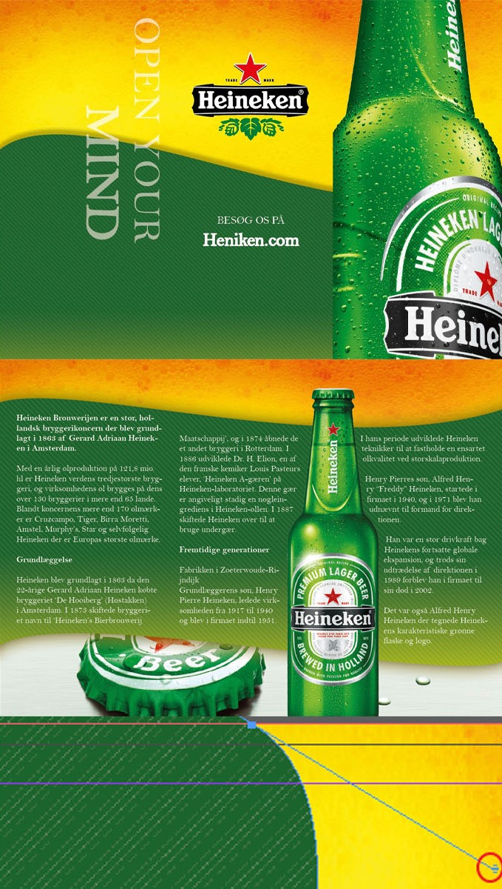
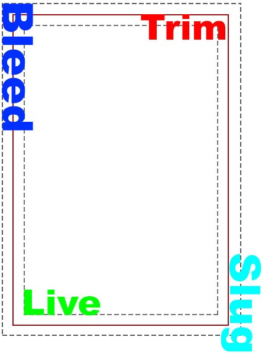

Indesign

InDesign er programmet der samler filerne til sidst, og sammensætter det hele inden man færdiggør sit projekt. Det bliver brugt til print for det meste, men kan også bruges til web. Dog er det ikke optimalt at bruge InDesign til at lave materialer til web design.
Her arbejder man med links, ved photoshop har man for eksempel et billede der ligger inde i programmet, hvor InDesign tager billederne fra forskellige steder, og henter dem ind i programmet den vej.
InDesign kan ikke redigere i billeder!
Hvis man vil sende et InDesign projekt til folk, skal man sørge for alt der er linket til i InDesign filen, bliver sendt med til modtageren.
Noter fra indesign;
Alt virker pixeleret i programmet, Shift + W får det til at ligne printet.
Frame Tool - (f)
Bliver brugt til at sætte billeder ind med. Man kan drag droppe billeder direkte ind i programmet. Med Selection tool (v) kan man ændre i billedet.
Convert direction tool (shift + C)
Giver billedet bezier handles, ses på billedet i den røde cirkel, så man kan trække buer i billedet, man aktivt arbejder med.
For at lave en shadow på begge siden af sit element, bruges inner glow, i stedet for dropshadow.
Eksport
PDF/X-4:2008 er en standard export PDF for adobe, og bliver generalt brugt.
Hige quality kan bruges når det gemmes til en selv.
Opbygning af indesign siden

Bleed-bliver brugt til at sørger for, at der ikke kommer en hvid ramme "whitespace" når man printer.
Man ligger sit design ud over linjerne, det bliver vist som kopieret, så der kan komme mere med, og at den der printer, kan se hvor han skal skære i billedet.
Live -det aktive canvas, der indeholder det der normalt bliver printet. Det er defineret som et "safe area" hvor alt der er inden i det, bliver med sikkerhed printet ud.
Trim -er der hvor der bliver skåret hos printeren og den der printer ud.
Slug -alt der ligger udenfor, ligger i området kaldet slug, alt der befinder sig her, kommer ikke med under print. Bleed ligger i slug området.